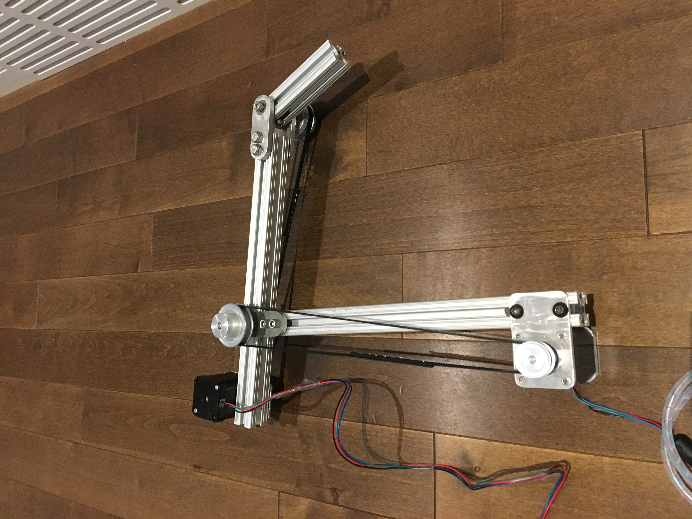

--> PLAY LINE FOLLOWING CAR VIDEO <--
Early stage with a couple stepper motors mounted to the 80/20 aluminum, along with the pulley system that moves the joints
MORE INFORMATION...
I started this project in January 2019. I was very lucky to find such a great mentor that taught me how to build this robot. The robot consists of four stepper motors and one servo motor, allowing it to have four degrees of freedom as well as a claw. It has a potentiometer mounted on each joint for motor feedback. With this information, I can know where the arm is and what position each motor is at in real-time, with high accuracy. This is how I can set specific positions for the arm to move to. I can also code multiple positions and have the arm follow a routine.
HOW THE FACIAL TRACKING WORKS:
I have also attached a USB webcam to the front of the arm for facial recognition. I created a program that constantly scans the video coming from the webcam for faces. Once the webcam finds a face, it then sends instructions to the robot, telling it to move and track the face.
A little bit more of a technical explanation:
I created a Processing 3 sketch (program) that uses OpenCV (an open-source coding library created by Intel that has files dedicated to computer vision) to find faces with the webcam. The sketch opens a window that displays the webcam feed. Then, the processing sketch calls upon a certain OpenCV file than can scan an image for specific shapes that make up faces. My program calls on the OpenCV file for every frame of the webcam feed. Then, once OpenCV finds a face in the window, my program will draw a green rectangle around this face. Next, the program uses the x and y coordinates of the face to find out if the face is in the left or right and top or bottom halves of the window, or if the face is in the middle of the program. Then, I created a link between my Arduino sketch (responsible for moving the arm) and my Processing sketch through the serial port (USB connection of the Arduino to my computer) because the Arduino sketch runs on the robot and my processing sketch runs on my computer. With this connection, the Arduino can receive very basic information from the Processing sketch. Depending on where the green rectangle surrounding the face is within the webcam window, the processing sketch will send different letters to the Arduino. For example, if the face is in the top left corner of the webcam window, the processing sketch will send the letter “a”. The Arduino then receives the letter “a” which triggers an “if” statement that tells two motors to move. When these two motors move, the robot will move to point the webcam directly at the face, causing the processing sketch to send a different letter because the face is now in the center of the webcam window. This letter causes the robot to keep its position.
If you want a better explanation, please call me anytime at 604-818-5219.